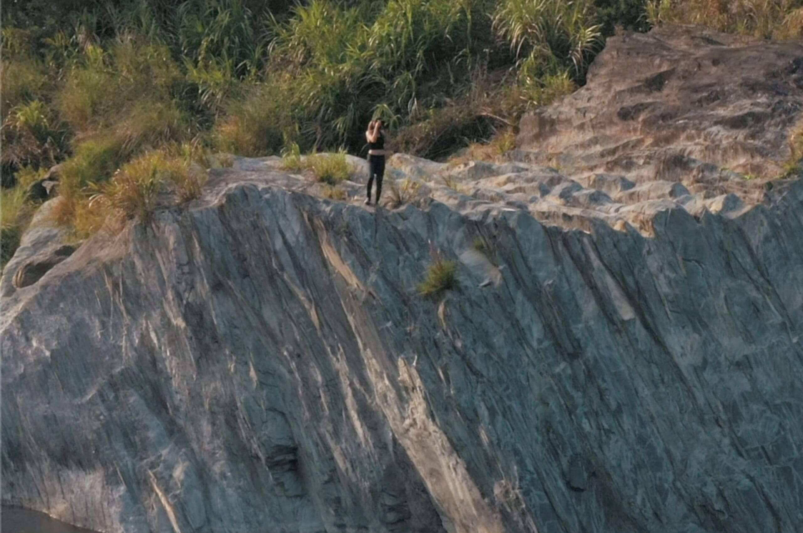
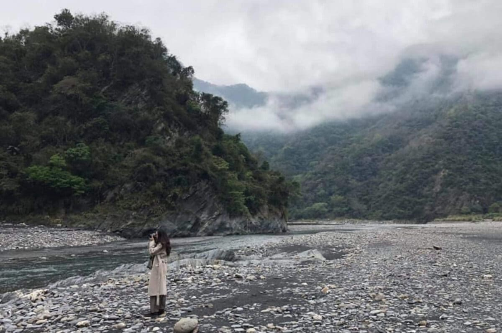

巴庫拉斯山居秘境｜南投二日遊
「走進山林，在撫慰人心的山河風光下來一場樸實動人的山居之旅：讓本質帶領你拜訪隱居山林的現代神農氏，在豐富的故事解說中，認識藥草與野生植物。」
行程特色
【 南投 巴庫拉斯 ｜山居尋幽：隱世山林的部落仙境】
隨著夜幕降臨，由當地生態的守護者帶領各位一窺夜晚的自然生態。晚餐，在大自然的環繞下來一場森林柴燒饗宴、享受依季節而食的自然蔬食的溫潤滋味。如山似河，靜下心享受自然帶給人的感動，重拾舒心而自在的自己、讓山河風光為你消化平日揮之不去的種種壓力。
探訪濁水溪沿途景觀，享受兒時河邊撿石的樂趣，在群山包圍的溪谷裡玩水。探訪隱藏在山林裡的石板屋，認識布農族的人文、歷史、文化，懷抱著被自然洗禮的感動下返回城市！
在巴庫拉斯，沒有繁華的都市幻景，但有人文與自然交織的古老部落遺跡，沒有奢華的精美餐點，卻有食物最單純的鮮甜原味。少了城市裡的紛雜資訊，但有好好和自己說話談心的自在餘裕。讓我們透過森林的療癒魅力、透過人與人之間的自在相處，重新理解這片土地的單純與美好。
和本質一起發掘台灣原始生活的純樸浪漫，透過人與人之間的自在相處，重新理解這片土地的單純與美好。懷抱著自然洗禮的感動，遇見沈澱後新生的自己。


行程說明
Day1
▍台中烏日高鐵站集合，踏上旅途
上午 09:30 台中烏日高鐵站 「 1F 載客區 7
號出口」集合，搭乘舒適九人座，出發前往巴庫拉斯。
▍漫步森林的科學療效｜玉管處導覽簡介
當沐浴在森林中時，滿滿的芬多精可以讓人提振精神、舒緩情緒、降低壓力，甚至有提高免疫功能的效果。而根據科學研究顯示，森林中的負離子對人體有淨化血液、減緩憂鬱、活細胞、提高人體副交感神經活性、平衡自律神經等功效。
▍沁彩食｜水里在地私廚料理
水里口耳相傳的私廚美食，不同於一般在地小吃的中式合菜，沁彩食採用當季食材製作，豐餘而低調，能從中品嚐出農家的用心和食材的經典美味。
▍四輪傳動休旅車
接著出發至巴庫拉斯深山區，此段山路稍為顛簸、較易暈車的旅客建議乘坐前座（路程約
60mins ）。
▍巴庫拉斯部落
撿拾濁水溪河床的岩片，出自布農老師傅的手藝，溫潤厚實的石板屋在這裡重現，一石一砌皆可看出布農族人的生活智慧與美學涵養。
▍獵人步道
跟著部落主人走訪從前山林獵人走訪的步道，獵人不再，但彷彿仍能看到獵人那為了家庭、為了餬口的英勇身影，那是一肩擔起責任的沈穩背影。
▍部落柴燒、燭火晚餐料理
巴庫拉斯(Bakurasu)位於濁水溪上游，原為布農族卡社群的舊部落，意指「河岸地勢平坦、水源豐沛的好地方。」，將與族人一同以木柴燒湯，體驗取自大自然的原始生活，完成豐盛的燭光晚餐，留下深刻的美好回憶。
▍夜間星空營火
佐著滿天星空，升起篝火、與導遊一同在篝火旁烤小點心，大家在唱邊暢談一整天的有趣事物、一同放鬆身心。
Day2
▍活力舒醒｜清晨朝食
與農地的距離不過幾步之遙，這是縮短與餐桌距離的最佳寫照，一早即享用最新鮮的山林活力蔬食。
▍濁水溪山溪美景
濁水溪沖刷山壁順勢也墊高了河床，讓我們可以沿著河床近距離的欣賞這樣壯觀的自然美景，除了山壁堆疊出的繁複紋理、光滑細緻的河床表面，都令人敬畏大自然的鬼斧神工。在濁水溪河畔踩踏河水，感受水流的清涼。呼山林的清新空氣、感受樹葉與花朵飄散在大自然中的氣味。
▍舒心午餐｜部落自然野菜料理
在寧靜的原始部落中享用自然野菜帶給心靈的豐足，與果腹後的飽足。
▍舒歇寶車｜啟程烏日高鐵站
搭乘四輪傳動休旅車返回玉山國家公園管理處，更換回9人座商務接駁車，返回台中烏日高鐵站，結束行程、期待下趟旅程再見。為防塞車狀況發生而延後抵達時間，建議旅人購買17:30以後的車票。
注意事項
一、出發前旅客任意解除契約需收取消費用，其額度如下：
- 通知於出發日前30日，無需賠償任何旅遊費用。
- 通知於出發日前7日內，賠償旅遊費用百分之五十。
二、嚴重特殊傳染性肺炎 COVID-19
注意事項：為配合中央政府規定防控疫情，具「列入第三級警吿國家或地區」活動史者，需進行
14
天居家檢疫。若您有上述旅遊史，務必事先告知，我們將全額退款。
三、配合「體溫過高者依傳染病防治法第 37 條第 1 項第 5 款及第 3
項規定」，旅行社於出發當日將進行體溫檢測，旅客經額溫槍量測達
37.5
度或有呼吸道症狀，將勸導其返家休息及就醫並婉拒旅客參團，也將全額退款。
**以上資料參考至本質旅行，純屬作業學習用途。
立即報名


 南投縣信義鄉
南投縣信義鄉
 行程天數2天1夜
行程天數2天1夜
 出發日期
2022/07/01(五)
出發日期
2022/07/01(五)
 成團人數2-10人
成團人數2-10人